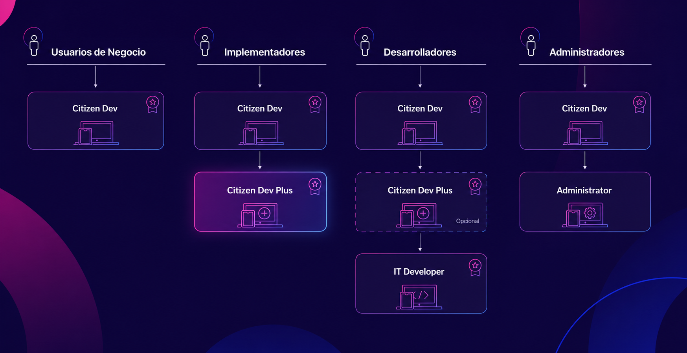
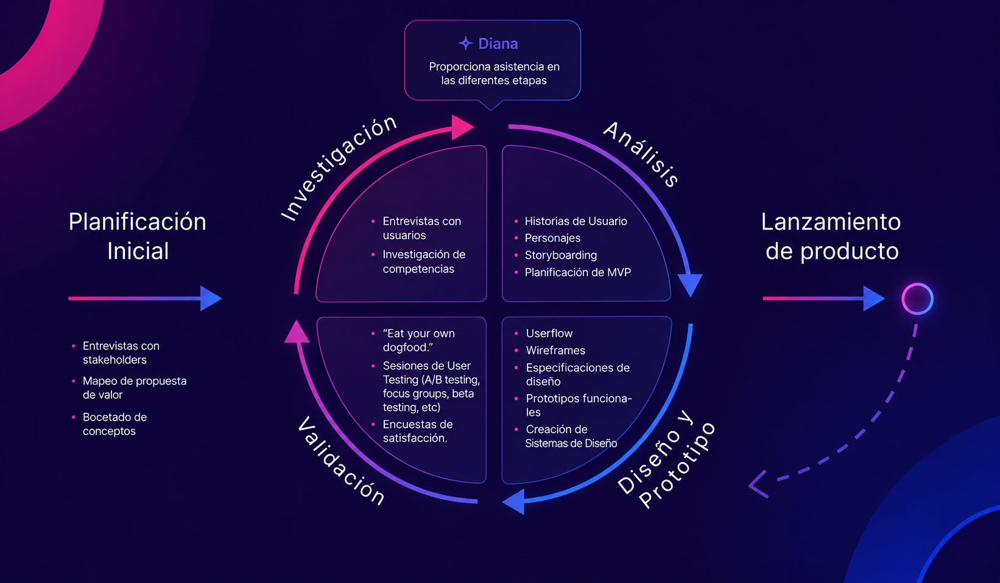
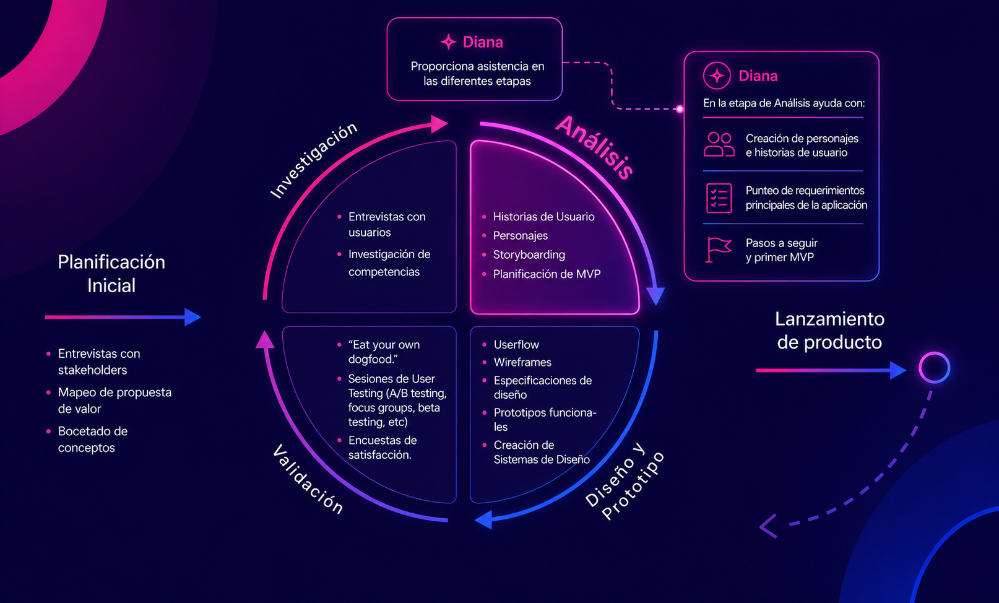
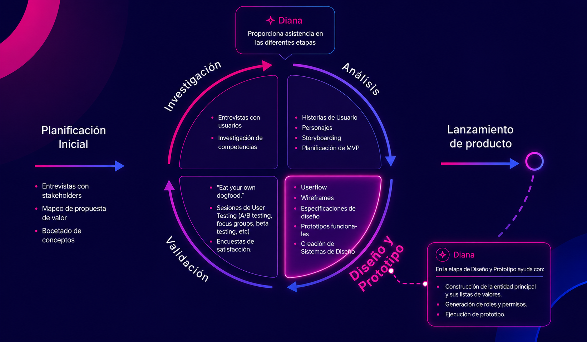
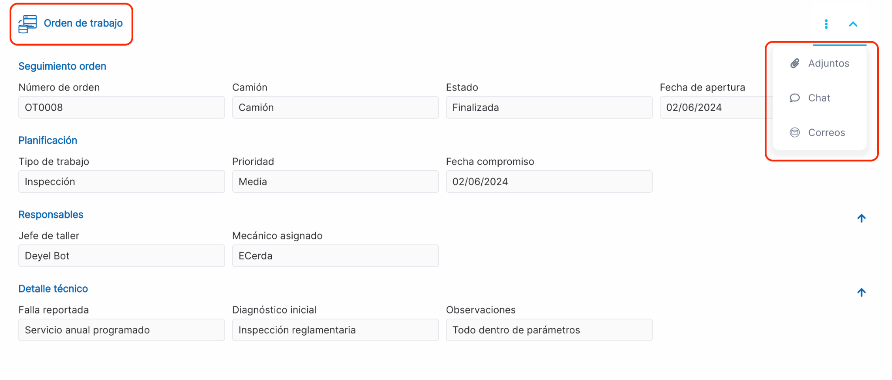
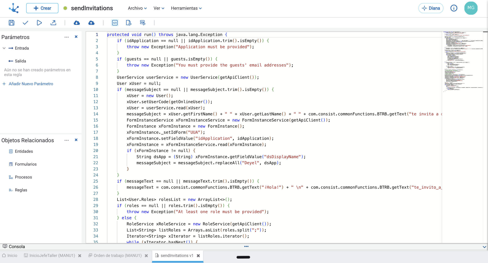
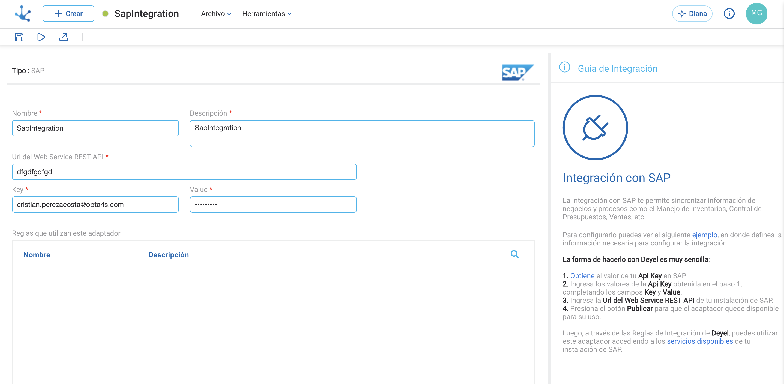
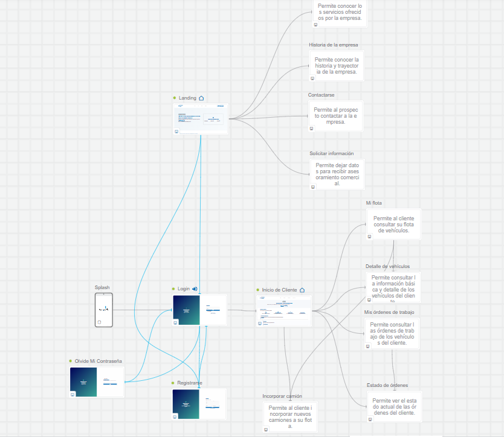
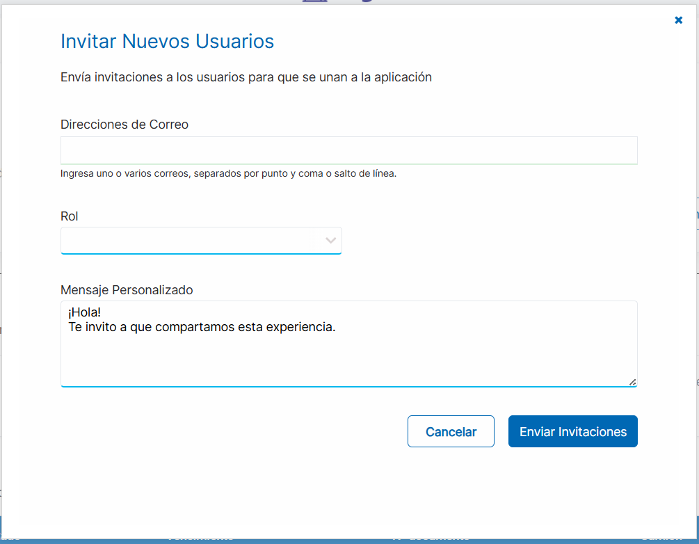

Deyel Citizen Developer Plus
Capacitación Deyel — Caminos de Aprendizaje


Una Metodología en Tres Dimensiones
Avance Rápido
(Creación por Prompts)
Mantenimiento Low-Code.
Crecimiento en Complejidad y Cambios.
Centrado en el usuario. Desde la investigación hasta la validación continua, cada etapa garantiza soluciones intuitivas y alineadas al negocio.
Transforma modelos conceptuales en aplicaciones funcionales sin código, acelerando el desarrollo y reduciendo el retrabajo.


Definiciones breves que expresan lo que el usuario desea lograr. Contienen los requisitos funcionales desde la perspectiva del usuario.
Delimitar qué funcionalidades son indispensables para una primera versión de la aplicación.
Filosofía: Construir rápido, validar temprano y evolucionar iterativamente.
Transformar lo conceptual en algo tangible. Objetivo: Modelar sin necesidad de código y validar rápidamente la idea.
Aplicaciones web responsivas con breakpoints para óptima adaptación a dispositivos.

Transformar las decisiones de diseño en componentes concretos de la aplicación.

Utilizan los diferentes adaptadores para integrarse con aplicaciones externas a Deyel.
Contienen lógica de negocio compleja. Pueden acceder a objetos Deyel dentro de la misma plataforma.
Basadas en el adaptador DeyelRuleSDK




Configuración, gestión del ambiente y seguridad.
Revisar la ejecución de los objetos modelados, a través del registro de todas las acciones que ocurren durante su ejecución.
Permite definir niveles de registro para conocer el comportamiento según las necesidades.
Se registran:
Tiempo de almacenamiento configurado en el ambiente.
Implementar nuevas aplicaciones y transferir modificaciones de forma segura y confiable.
Flujo: Desarrollo → Test → Producción
Colección de objetos seleccionados y datos de entidades que se requiere instalar en un ambiente.
Incluir datos de entidades para transferir junto con los objetos.
Deyel Citizen Developer Plus · Optaris · Julio 2026